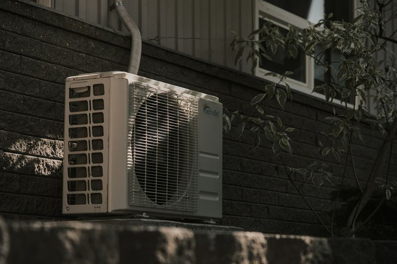

← Všechny služby
Tepelná čerpadla
Navrhnu tepelné čerpadlo podle Vašeho domu, namontuji ho a postarám se o servis. Servisuji i čerpadla Daikin, Viessmann a Samsung, která už máte doma.

Od návrhu po servis
Tepelné čerpadlo musí sedět k domu i k topení, které v něm je. Proto začínám tím, že se podívám na dům a na současnou topnou soustavu.
- Prohlídka a návrhPodívám se na dům a topení a navrhnu vhodné čerpadlo.
- MontážVenkovní i vnitřní jednotka, napojení na topení a ohřev vody.
- SpuštěníNastavím regulaci a ukážu Vám, jak systém ovládat.
- ServisPravidelný servis a opravy, i pro Daikin, Viessmann a Samsung.


„Výborná firma, kvalitní práce a příznivá cena.“
zákazník na Firmy.cz